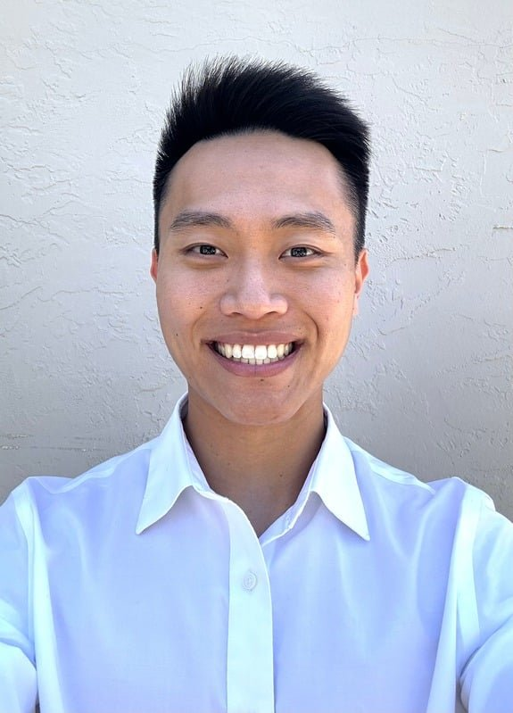
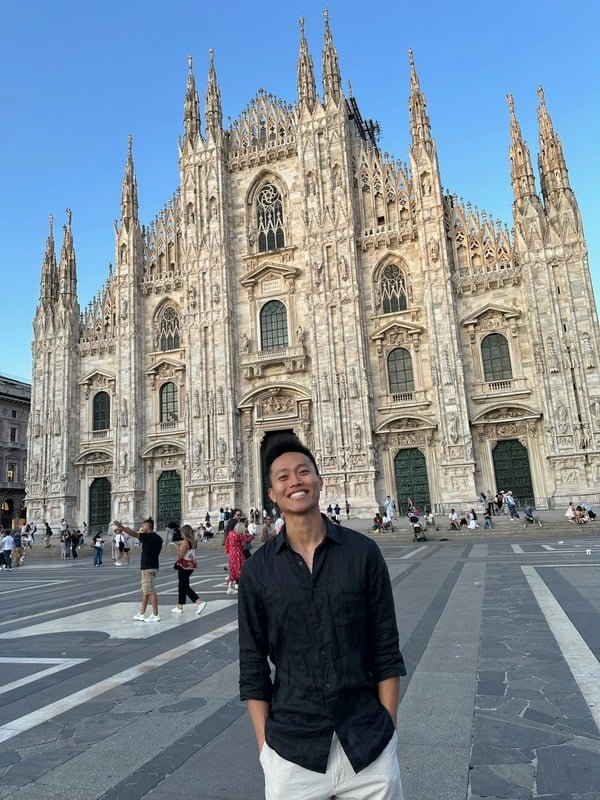
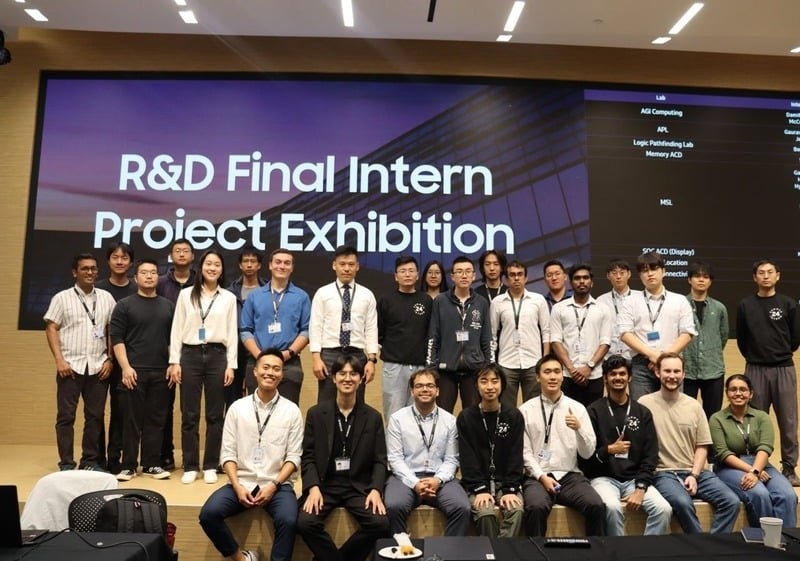
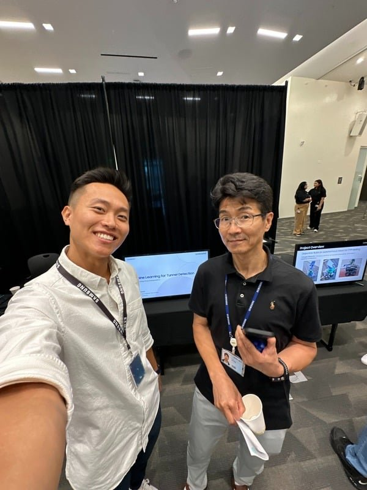
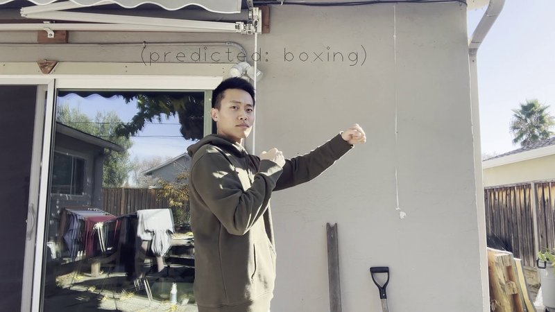
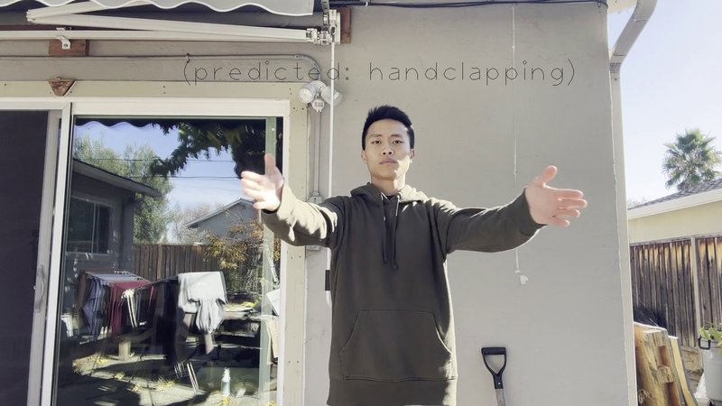
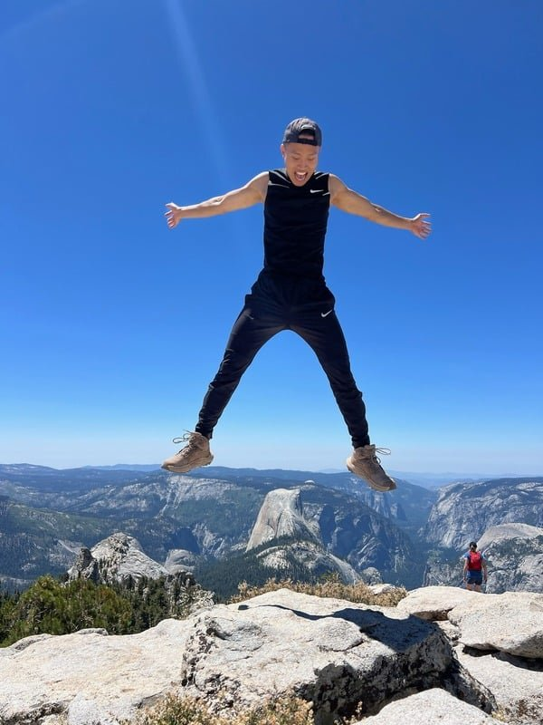

Display Quality Engineer Intern · Apple
Engineered predictive models beyond traditional SPC and Cpk metrics to set proactive test parameters and evaluate panel quality.
Predictive modelingSPC / Cpk
I use AI fluently, from prompt engineering to building models from scratch, to analyze data and improve semiconductor quality and reliability. Experience at Apple, SK Hynix and Samsung. Google AI certified.

AI-powered data analysis Semiconductor quality Reliability engineering
AI is how I work. I use it to research, find insights in large datasets, write and automate analysis, and build apps, and I understand it from the inside: I implemented a GPT-2 LLM from scratch at SK Hynix. I hold the Google AI Professional Certificate and the Google AI Essentials Specialization.
I point that toolkit at semiconductor quality and reliability: predictive models for display panel quality at Apple, SSD reliability testing at SK Hynix, and ML on sensor data at Samsung. I studied software engineering at San Jose State and I'm completing an MS in Computer Science at Georgia Tech. Off the clock, you'll find me hiking, traveling and jumping off summits (carefully).
Engineered predictive models beyond traditional SPC and Cpk metrics to set proactive test parameters and evaluate panel quality.


Combined Kalman filter–based algorithms with machine learning to detect tunnels from GNSS and MEMS data, so cars keep accurate positioning when the satellite signal drops.


Multi-object tracking with Kalman and particle filters that holds up under noise and occlusion, aimed at autonomous navigation pipelines.
Forecasting with ensemble learners and Q-learning over technical indicators like SMA and Bollinger Bands, beating baseline portfolio returns.
A cross-platform (iOS and Android) multi-factor authentication app for secure ID verification.
View on GitHubA three-tier prescription management system on Tomcat and MySQL, built with a focus on reliable backend data handling.
I'm looking for full-time roles in AI-driven quality, reliability and data analysis, especially in semiconductors, and can start immediately.

Ready to jump in.